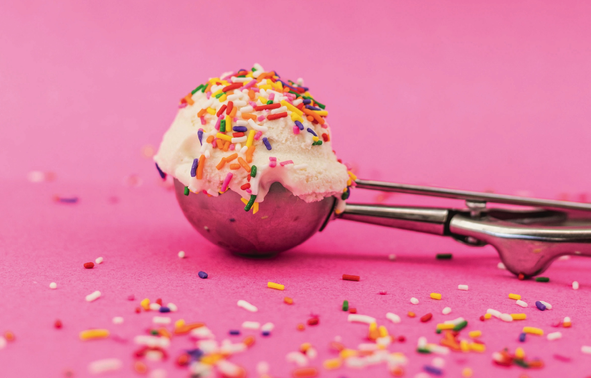

About Sarah's Scoops
Sarah’s Scoops is a small, family and friend owned ice cream shop
in Eau Claire, Wisconsin. The Owner, Sarah, is a local Eau Claire
resident and ice cream enthusiast who brought her creative visions
to life. The shop is located along the Eau Claire River, neighboring
the Banbury Place business center. Sarah’s scoops is a classic,
homey ice cream shop which features a rotation of homemade
flavors and welcoming staff.